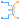
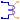
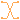

Basic fundamental wave components
Basic components of the FundamentalWave library for modeling magnetic circuits. Machine specific components are located at Machines.Components.
Extends from Modelica.Icons.Package (Icon for standard packages).
| Name | Description |
|---|---|
| Magnetic ground | |
| Salient reluctance | |
| Salient Permeance | |
| Constant loss model under sinusoidal magnetic conditions | |
|  PolyphaseElectroMagneticConverter | Polyphase electromagnetic converter |
|  QuasiStaticAnalogElectroMagneticConverter | Electromagnetic converter to only (!) quasi-static analog, neglecting induced voltage |
| Idle running branch | |
| Short connection | |
|  Crossing | Crossing of connections |
Magnetic ground
Grounding of the complex magnetic potential. Each magnetic circuit has to be grounded at least one point of the circuit.
| Name | Description |
|---|---|
| port_p | Complex magnetic port |
Salient reluctance
The salient reluctance models the relationship between the complex magnetic potential difference
 and the complex magnetic flux
and the complex magnetic flux  ,
,

which can also be expressed in terms complex phasors:

Extends from Interfaces.TwoPort (Elementary partial two port for textual programming).
| Name | Description |
|---|---|
| R_m | Magnetic reluctance in d=re and q=im axis |
| Name | Description |
|---|---|
| port_p | Positive quasi-static magnetic port of fundamental wave machines |
| port_n | Negative quasi-static magnetic port of fundamental wave machines |
Salient Permeance
The salient permeance models the relationship between the complex magnetic potential difference
and the complex magnetic flux :
Extends from Interfaces.TwoPort (Elementary partial two port for textual programming).
| Name | Description |
|---|---|
| G_m | Magnetic permeance in d=re and q=im axis |
| Name | Description |
|---|---|
| port_p | Positive quasi-static magnetic port of fundamental wave machines |
| port_n | Negative quasi-static magnetic port of fundamental wave machines |
Constant loss model under sinusoidal magnetic conditions
The eddy current loss model with respect to fundamental wave effects is designed in accordance to FluxTubes.Basic.EddyCurrent and FundamentalWave.Components.EddyCurrent.
 .
.

|
Due to the nature of eddy current losses, which can be represented by symmetric
conductors in an equivalent electric circuit (Fig. 1), the respective
number of phases  has to be taken into account.
Assume that the conductances
of the equivalent circuit are
has to be taken into account.
Assume that the conductances
of the equivalent circuit are  ,
the conductance for the eddy current loss model is determined by
,
the conductance for the eddy current loss model is determined by

where  is the number of turns of the symmetric electromagnetic coupling.
is the number of turns of the symmetric electromagnetic coupling.
For such an phase system
the relationship between the voltage and current space phasors
and the magnetic flux and magnetic potential difference phasor is
 ,
,
 ,
,
where  and
and  are the phase voltages and currents, respectively.
are the phase voltages and currents, respectively.
The dissipated loss power

can be determined for the space phasor relationship of the voltage and current space phasor.
Extends from Interfaces.TwoPort (Elementary partial two port for textual programming), Modelica.Thermal.HeatTransfer.Interfaces.PartialElementaryConditionalHeatPort (Partial model to include a conditional HeatPort in order to dissipate losses, used for textual modeling, i.e., for elementary models).
| Name | Description |
|---|---|
| G | Equivalent symmetric loss conductance [S] |
| useHeatPort | = true, if heatPort is enabled |
| T | Fixed device temperature if useHeatPort = false [K] |
| Name | Description |
|---|---|
| port_p | Positive quasi-static magnetic port of fundamental wave machines |
| port_n | Negative quasi-static magnetic port of fundamental wave machines |
| heatPort | Optional port to which dissipated losses are transported in form of heat |
Polyphase electromagnetic converter
Each phase  of an phase winding has an effective number of turns,
of an phase winding has an effective number of turns,  and an respective winging angle
and an respective winging angle  and a phase current .
and a phase current .
The total complex magnetic potential difference of the polyphase winding is determined by:

In this equation
 is the positive symmetrical component of the currents.
is the positive symmetrical component of the currents.
The positive sequence of the voltages
 induced in each winding is directly proportional to the complex magnetic flux and the number of turns. This relationship can be modeled by means of
induced in each winding is directly proportional to the complex magnetic flux and the number of turns. This relationship can be modeled by means of
 .
.
Modelica.Magnetic.FundamentalWave.Components.SinglePhaseElectroMagneticConverter, Modelica.Magnetic.FundamentalWave.Components.PolyphaseElectroMagneticConverter, QuasiStaticAnalogElectroMagneticConverter
| Name | Description |
|---|---|
| m | Number of phases |
| effectiveTurns | Effective number of turns |
| Name | Description |
|---|---|
| plug_p | Positive plug |
| plug_n | Negative plug |
| port_p | Positive complex magnetic port |
| port_n | Negative complex magnetic port |
Electromagnetic converter to only (!) quasi-static analog, neglecting induced voltage
The analog single-phase winding has an effective number of turns,  and a respective orientation of the winding,
and a respective orientation of the winding,  . The current in the winding is
. The current in the winding is  .
.
The total complex magnetic potential difference of the single-phase winding is determined by:

where
 is the reference angle of the electrical and magnetic system, respectively. The induced voltage
is the reference angle of the electrical and magnetic system, respectively. The induced voltage  is identical to zero.
is identical to zero.
Modelica.Magnetic.FundamentalWave.Components.SinglePhaseElectroMagneticConverter, Modelica.Magnetic.FundamentalWave.Components.PolyphaseElectroMagneticConverter, PolyphaseElectroMagneticConverter
| Name | Description |
|---|---|
| effectiveTurns | Effective number of turns |
| Name | Description |
|---|---|
| pin_p | Positive pin |
| pin_n | Negative pin |
| port_p | Positive complex magnetic port |
| port_n | Negative complex magnetic port |
Idle running branch
This is a simple idle running branch.
Short Crossing, Magnetic.FundamentalWave.Components.Idle, Magnetic.FundamentalWave.Components.Short, Magnetic.FundamentalWave.Components.Crossing
Extends from Interfaces.TwoPort (Elementary partial two port for textual programming).
| Name | Description |
|---|---|
| port_p | Positive quasi-static magnetic port of fundamental wave machines |
| port_n | Negative quasi-static magnetic port of fundamental wave machines |
Short connection
This is a simple short cut branch.
Idle Crossing, Magnetic.FundamentalWave.Components.Idle, Magnetic.FundamentalWave.Components.Short, Magnetic.FundamentalWave.Components.Crossing
Extends from Interfaces.TwoPortElementary (Partial two port for graphical programming).
| Name | Description |
|---|---|
| port_p | Positive quasi-static magnetic port of fundamental wave machines |
| port_n | Negative quasi-static magnetic port of fundamental wave machines |
Crossing of connections
This is a simple short cut branch.
Idle Short Magnetic.FundamentalWave.Components.Idle, Magnetic.FundamentalWave.Components.Short, Magnetic.FundamentalWave.Components.Crossing
| Name | Description |
|---|---|
| port_p1 | Connected with port_p2 |
| port_n1 | Connected with port_n2 |
| port_p2 | Connected with port_p1 |
| port_n2 | Connected with port_n1 |